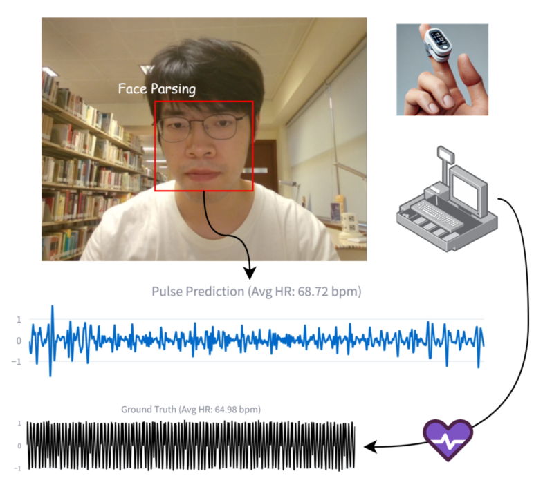
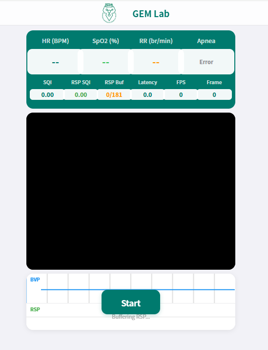
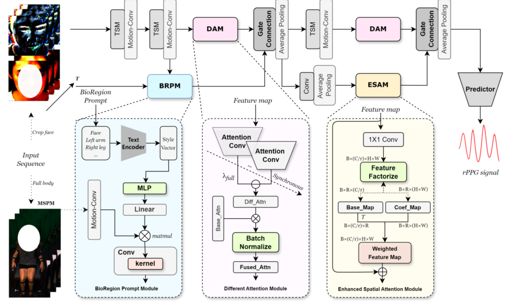

This project investigates remote multi-vital signs monitoring and analysis using videos captured under diverse conditions. Our goal is to support non-contact physiological sensing by jointly studying signal extraction, multi-region observation, data collection, and analysis robustness. Rather than centering on a single paper, this page summarizes a broader research line, in which SHIELDNet represents the model-design direction and MPU-rPPG represents the dataset and benchmark direction.
Research Project
Remote Multi-Vital Signs Monitoring and Analysis
A research project on robust remote physiological sensing, focusing on multi-region video analysis, rPPG-based vital signs estimation, and reliable monitoring under diverse real-world conditions.

Authors
Zhengxuan Chen
Jie Gao
Kaiwen Yang
Tao Tan
Chan Tong Lam
Yue Sun
Zitong Yu
Haitao Jiang
Keguang Wang
Affiliation
Macao Polytechnic University and collaborators
Recovered Signal
rPPG
Project Directions
SHIELDNet
MPU-rPPG
Remote physiological sensing
Overview
Toward robust and generalizable remote health monitoring
Demo Showcase
Interactive project demo
A live demo page is available for this project. You can preview it below or open the full demo in a new tab.
The project emphasizes robust signal recovery from multiple anatomical regions and supports the analysis of physiological dynamics under motion, illumination variation, and subject diversity.
Use the preview on the right to inspect the demo interface, or open the full demo page in a new tab for direct interaction.

Preview captured from the online demo page. Use the external demo link above to open the full interactive experience.
Architecture
Model architecture and research scope
The project emphasizes robust signal recovery from multiple anatomical regions and supports the analysis of physiological dynamics under motion, illumination variation, and subject diversity.
Multi-region physiological sensing
Vital signs monitoring and analysis
Dataset and evaluation

Architecture figure supplied for the project page.
Related Publications
Representative works in this project
SHIELDNet: Multi-Region Fusion and Denoising for Enhanced rPPG Signal Extraction in Healthcare Monitoring
MPU-rPPG: A Comprehensive and High-Fidelity Dataset for Remote Photoplethysmography Across Diverse Conditions and Demographics
BibTeX
Citation
You can cite the representative publications below.
@inproceedings{chen2025shieldnet,
title = {SHIELDNet: Multi-Region Fusion and Denoising for Enhanced rPPG Signal Extraction in Healthcare Monitoring},
author = {Chen, Zhengxuan and Gao, Jie and Yang, Kaiwen and Tan, Tao and Lam, Chan Tong and Sun, Yue},
booktitle = {Proceedings of the IEEE International Conference on Bioinformatics and Biomedicine},
year = {2025},
pages = {2074--2079},
doi = {10.1109/BIBM66473.2025.11356675}
}
@article{chen2026mpurppg,
title = {MPU-rPPG: A Comprehensive and High-Fidelity Dataset for Remote Photoplethysmography Across Diverse Conditions and Demographics},
author = {Chen, Zhengxuan and Tan, Tao and Yu, Zitong and Jiang, Haitao and Wang, Keguang and Gao, Jie and Sun, Yue},
journal = {Scientific Data},
year = {2026},
doi = {10.1038/s41597-026-07310-3}
}